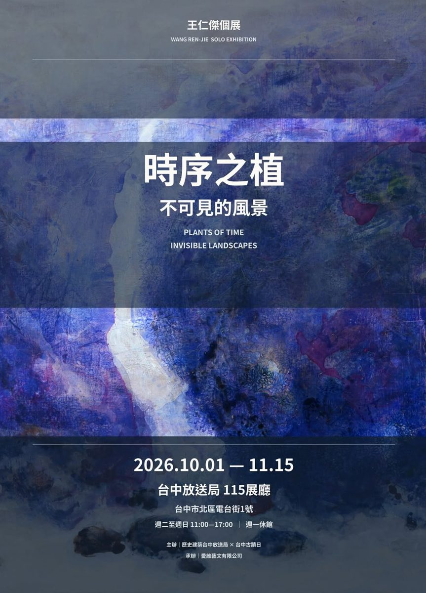
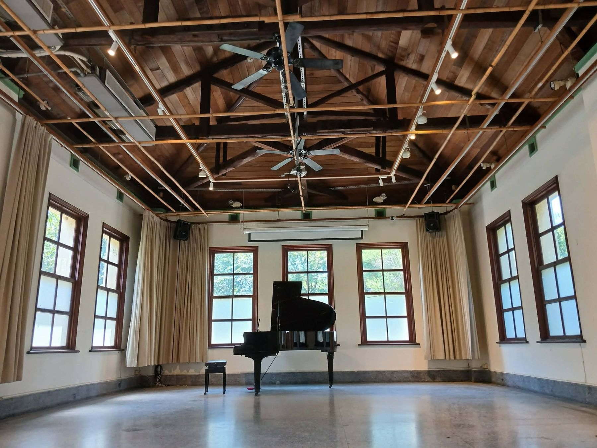
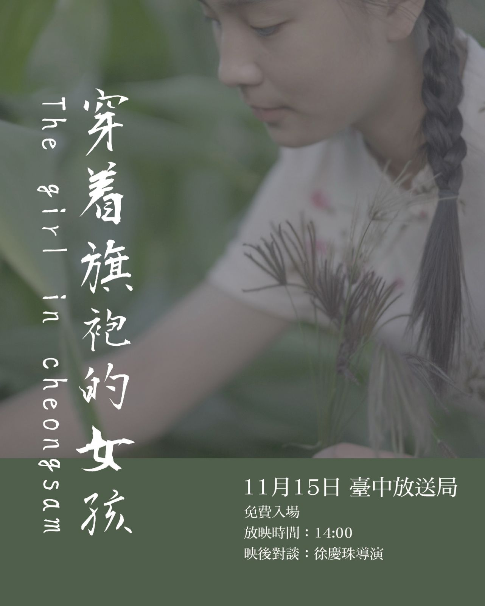

2026.10.01 – 11.30 · 藝文展覽
《時序之植 不可見的風景》
王仁傑個展
就在台中放送局！
- 展期
- 2026.10.01 – 2026.11.30
- 開放
- 週二至週日 11:00–17:00，週一休館
- 地點
- 歷史建築台中放送局 115 展廳（台中市北區電台街一號）
- 票價
- 免費參觀

06 · 系列活動與購票
On Air Series
藝文展覽、音樂會、電影放映，在 1935 年的洋樓裡發生。
依日期找活動
在 94 扇窗的洋樓裡，看當代藝術家與老建築對話。

2026.10.01 – 11.30 · 藝文展覽
就在台中放送局！
週末午後，在 1935 年的洋樓裡聽一場有溫度的現場。
11.14 六 · 14:30 · 音樂會
曾與歌壇眾多歌手合作、淬鍊深厚音樂底蘊的音樂才女李昀陵，與吉他手劉旭明邀你在週末午後入席，在熟悉旋律裡與青春重逢。重新演繹〈魂縈舊夢〉〈月夜愁〉〈Fly Me to the Moon〉等中西經典，其他曲目陸續公布。
在老放送局裡看一部電影，再聽導演聊聊幕後。

11.15 日 · 14:00 · 放送電影院
如果有一天，收到一封遲到了 40 年的家書，你會想起誰？電影以 1949 年來臺的沈媛為主角，透過一封久違的家書、一件件珍藏的旗袍，走進她塵封的記憶，看見對故鄉的思念、對母親的牽掛，以及來不及說出口的話。
LINE 官方帳號
臺中放送局在 LINE 官方帳號登場囉！活動消息、購票提醒與優惠資訊，第一時間傳給你。